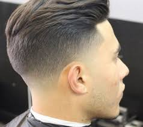
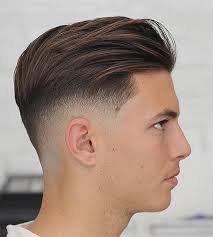

Degradado (Fade): Implica que el cabello se corta gradualmente, desde corto en la parte inferior hasta más largo en la parte superior.  Undercut: Similar al fade, pero con un contraste más marcado entre los lados cortos y la parte superior más larga.  Corte Pompadour: Caracterizado por tener el cabello largo en la parte superior y los lados cortos o con un fade. Buzz Cut o Rapado: Un corte de cabello corto en el que todo el cabello se corta uniformemente con una máquina de afeitar o tijeras. Quiff: Similar al pompadour, pero con un flequillo más pronunciado que se peina hacia arriba y hacia adelante. Corte Caesar: Caracterizado por un flequillo más corto y texturizado, con los lados recortados o con un fade suave. Corte Crop: Un corte corto en la parte superior con los lados también cortos, a menudo con una franja texturizada en la parte delantera. Corte Taper: Similar al fade pero con una transición más suave entre los lados y la parte superior. Correo Electrónico: Fecha de la Cita: Hora de la Cita: Agendar Cita